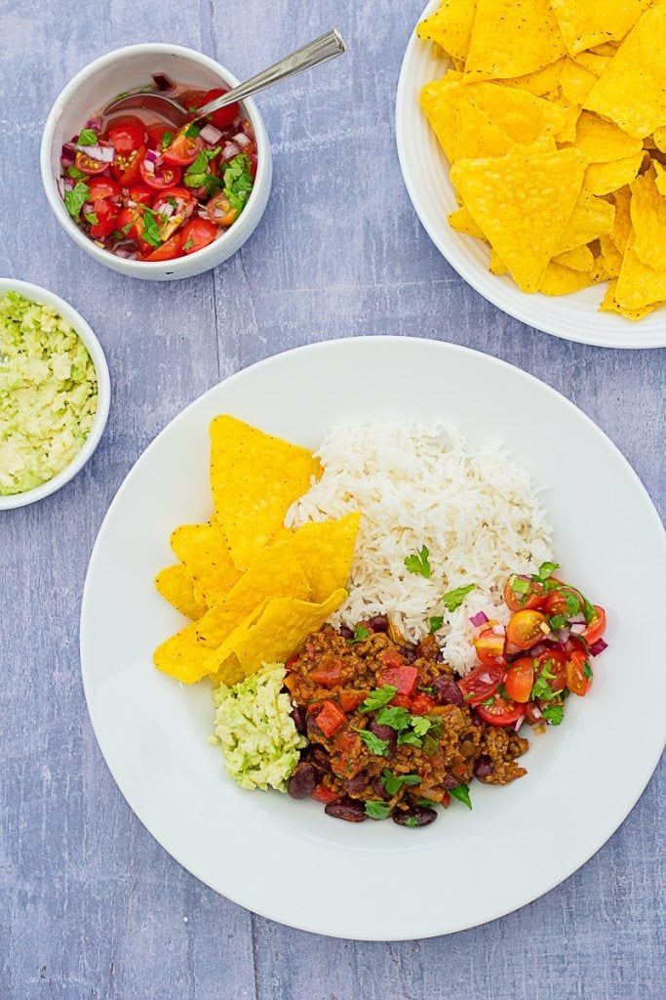

Ingredients
| Ingredient |
Amount |
| Olive oil |
1 tbsp |
| Onion |
1 |
| Red pepper |
1 |
| Beef mince |
500 g |
| Garlic clove |
2 |
| Chili flakes |
1 tsp |
| Cumin |
1 tsp |
| Smoked paprika |
3 tsp |
| Dried oregano |
1 tsp |
| Salt and pepper |
to taste |
| Chopped tomatoes |
400 g |
| Beef stock cube |
1 |
| Kidney beans |
400 g |
| Fresh coriander |
2 tbsp |
Instructions
- Place the olive oil, diced onion and pepper in a wide, deep pan and fry on a gentle heat with the lid on for 3-5 minutes, or until softened but not brown. Stir occasionally.
- Turn the heat up and add the beef mince. Fry for 3-5 minutes until the mince is nicely browned. Use a wooden spoon to break up the mince and stir frequently.
- Turn the heat down low and add the garlic, chilli flakes, cumin, smoked paprika and oregano. Fry for a further 2 minutes, stirring frequently.
- Add the tinned tomatoes and stock cube, plus the kidney beans and all the water from the kidney bean can. Turn the heat up to bring to the boil, then turn down low and simmer for 15 minutes.
- After 15 minutes, stir in the fresh coriander (cilantro) and serve with plain rice and/or all your Tex-Mex favourites!
Recipe link